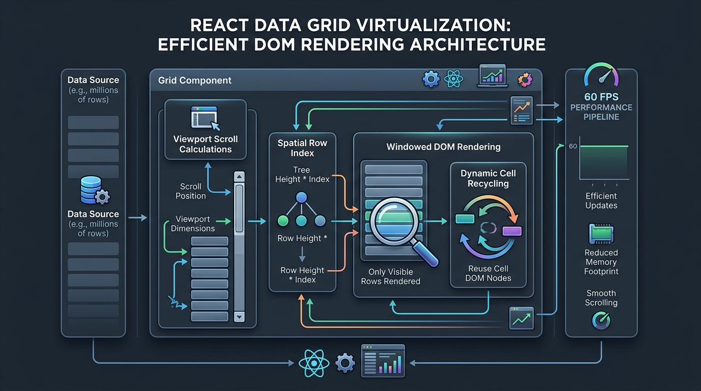

High-Performance React Data Grid Virtualization for Heavy Datasets

Why Standard HTML Tables Choke on 10,000+ Rows
When you render a standard The result is immediate UI degradation:
React DataGrid calculates the scroll container's pixel offset on each animation frame. It positions mounted rows using absolute CSS transforms while recycling unmounted DOM nodes as the user scrolls. Three features make it particularly effective for dense datasets:
1. Row and Column Virtualization: It virtualizes horizontally as well as vertically, making 50-column datasets as fast as 5-column ones.
2. Native Tree Data Support: It handles parent-child mission stages (e.g., *Apollo 11* → *Launch* → *Translunar Injection* → *Lunar Landing*) without requiring third-party state managers.
3. Memoized Cell Renderers: High-frequency cell updates avoid triggering full table reconciliation passes. interface MissionRecord {
id: string;
missionName: string;
agency: string;
costMillions: number;
status: 'SUCCESS' | 'FAILURE' | 'ACTIVE';
launchDate: string;
} export function SpaceMissionExplorer({ data }: { data: MissionRecord[] }) {
const [selectedRow, setSelectedRow] = useState<MissionRecord | null>(null); const columns = useMemo(() => [
{ name: 'id', header: 'Mission ID', defaultWidth: 120 },
{ name: 'missionName', header: 'Mission Name', minWidth: 200, defaultFlex: 2 },
{ name: 'agency', header: 'Agency', minWidth: 140, defaultFlex: 1 },
{
name: 'costMillions',
header: 'Budget ($M)',
type: 'number',
defaultWidth: 130,
render: ({ value }: { value: number }) => return (
<div style={{ height: 600, width: '100%' }}>
<ReactDataGrid
idProperty="id"
theme="default-dark"
style={{ height: '100%', width: '100%' }}
columns={columns}
dataSource={data}
pagination
defaultLimit={50}
virtualizeColumns
enableSelection
onSelectionChange={({ data }) => setSelectedRow(data as MissionRecord)}
/>
</div>
);
}
For applications requiring dense, real-time data grids with virtualization and tree support, React DataGrid delivers enterprise performance with minimal configuration. Keep columns memoized, enable viewport virtualization, and let the engine handle the rest. It uses DOM virtualization to render only the visible viewport rows (typically 20–40 nodes), keeping browser layout calculations constant regardless of total dataset size. TanStack Table is a headless library providing data logic without UI elements, while React DataGrid is a complete component with pre-built virtualization, theming, and controls. Yes. React DataGrid natively supports Tree Data structures, allowing hierarchical parent-child records to expand and collapse without custom state wrappers. Yes. Setting `virtualizeColumns` ensures tables with dozens of columns only mount visible horizontal cells, preventing layout recalculation lag. React DataGrid provides built-in export utilities that extract filtered, sorted, and grouped table data directly into CSV or Excel XLSX files. How to saturate 1 Gbps fiber connections using concurrent TCP chunking, zero-copy buffers, and Tokio in Rust & Tauri. Accelerating financial payment aging calculations by 50x using vectorized Polars lazy evaluation and Rust backends. in React with 10,000 rows and 8 columns, you mount 80,000 individual DOM nodes. The browser engine has to calculate layout geometry, font metrics, and event listeners for all 80,000 elements simultaneously.
The fix is DOM virtualization: keeping only the 25–40 rows currently inside the viewport mounted in the DOM.
┌────────────────────────────────────────────────────────┐
│ React DataGrid Viewport │
│ ┌──────────────────────────────────────────────────┐ │
│ │ Mounted DOM Slice (Rows 104–130 Visible) │ │
│ └──────────────────────────────────────────────────┘ │
│ │
│ Virtual Window Buffer (Top / Bottom CSS Transform) │
└───────────────────────────┬────────────────────────────┘
│
▼
┌────────────────────────────────────────────────────────┐
│ In-Memory / Server-Side Store (100,000 Records) │
└────────────────────────────────────────────────────────┘
How Viewport Virtualization Keeps DOM Node Counts Under 100
Step-by-Step Implementation: The Space Mission Explorer
Step 1: Install Dependencies
Install the community package:
npm install @inovua/reactdatagrid-community
Step 2: Define Columns with Strict Formatting
Always define columns outside the component or wrap them in useMemo to prevent unnecessary table re-renders:
import React, { useMemo, useState } from 'react';
import ReactDataGrid from '@inovua/reactdatagrid-community';
import '@inovua/reactdatagrid-community/index.css';
import '@inovua/reactdatagrid-community/theme/default-dark.css';
$${value.toLocaleString()}
},
{
name: 'status',
header: 'Status',
defaultWidth: 120,
render: ({ value }: { value: string }) => (
<span className={status-pill status-${value.toLowerCase()}}>
{value}
</span>
)
},
{ name: 'launchDate', header: 'Launch Date', defaultWidth: 140 }
], []);Comparison: React Data Grid Options
Dimension React DataGrid (@inovua) AG Grid (Community) TanStack Table (v8) Model Turnkey Component Enterprise Framework Headless UI Hook Virtualization Built-in (Rows & Columns) Built-in Requires @tanstack/react-virtualTree Data Native Support Community Partial Manual state mapping Out-of-the-Box Dark Theme Yes Yes None (Build your own CSS) Bundle Size ~140 KB ~320 KB ~15 KB (Headless only) Performance Mistakes to Avoid
render props force cell reconciliation on every scroll tick.Conclusion & Key Takeaways
Frequently Asked Questions
How does React DataGrid maintain 60 FPS on 100,000 rows?
What is the difference between React DataGrid and TanStack Table?
Can React DataGrid render expandable tree hierarchies?
Does React DataGrid support column virtualization?
How do you export data from React DataGrid to CSV?
Saturating Gigabit Fiber: Building a High-Throughput Download Manager in Rust and Tauri
Vectorized Payment Aging Pipelines in Python with Polars